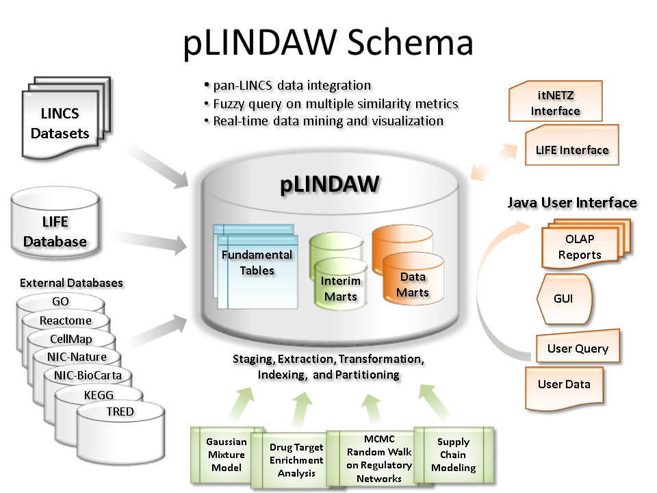

Overview
 A significant gap lies between the abundant LINCS resources and the needs of general LINCS users. Onechallenge is that current LINCS data visualization and analysis tools are not designed for general users. Another challenge is that integrating the current data and analysis tools of different LINCS projects is difficult, because the drugs, inhibitors, and cell lines used by LINCS screening groups are not well overlapped. To address these two challenges, this collaboration aims to establish an online Pan-LINCS Data Warehouse (pLINDAW) using ontological concepts to incorporate LINCS datasets, and build upon the server-end a Supply Chain Landscape (SCHALE) model to provide a graphic user interface for real-time pathway data visualization according to customizable fuzzy queries. The proposed system will enable more comprehensive data integration and novel types of queries to interrogate LINCS data.
A significant gap lies between the abundant LINCS resources and the needs of general LINCS users. Onechallenge is that current LINCS data visualization and analysis tools are not designed for general users. Another challenge is that integrating the current data and analysis tools of different LINCS projects is difficult, because the drugs, inhibitors, and cell lines used by LINCS screening groups are not well overlapped. To address these two challenges, this collaboration aims to establish an online Pan-LINCS Data Warehouse (pLINDAW) using ontological concepts to incorporate LINCS datasets, and build upon the server-end a Supply Chain Landscape (SCHALE) model to provide a graphic user interface for real-time pathway data visualization according to customizable fuzzy queries. The proposed system will enable more comprehensive data integration and novel types of queries to interrogate LINCS data.
